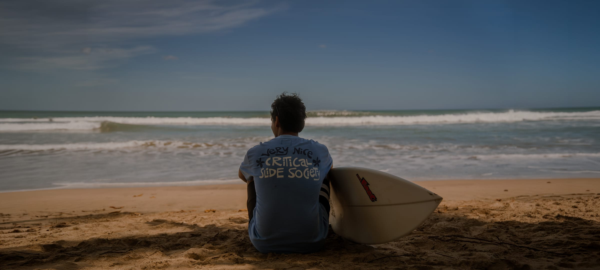

About
Meet Mateo
Founder and surf coach at Lean Forward, Tamarindo, Guanacaste.
My story
My name is Mateo. I moved from Colombia to Costa Rica when I was 13 years old. At the time, I had never surfed, didn't even know how to swim, and knew absolutely nothing about the ocean or surfboards. One day, while walking along Tamarindo Beach, I saw people surfing and was instantly captivated.
Surfing taught me to respect the ocean, appreciate its beauty, and understand its constantly changing nature. More importantly, it showed me the power of sharing a passion with others — and I now strive to pass that passion on to every person I have the privilege to teach.
Lean Forward was born from that purpose. My goal is not simply to teach people how to surf. It is to help them build confidence, connect with the ocean, discover what they are capable of, and experience the incredible feeling that comes from riding a wave.
Because sometimes, one wave can change much more than your day. It can change your life.
Lean Forward — Smooth Connection.
Read the full storyThe vision behind Lean Forward
To create ocean experiences that inspire growth, connection and progress.
Through personalized surf coaching, guided adventures, and a deep respect for nature, we help people move beyond simply learning to surf. Our purpose is to create space for confidence, discovery, and meaningful experiences in and out of the water.
What to expect
- Personalized coaching: sessions tailored to your unique goals and current skill level
- Progress-focused: a structured approach built to see real results in every wave
- Video feedback: detailed technical analysis to refine your form and technique
- Nature-centered: the ocean, coastline, and hidden beauty of Guanacaste beyond the typical tourist path
Ready to lean forward?
Tell us your level, your dates and how many of you there are — we'll build the session around it.
Contact us